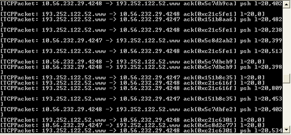

[A .NET sniffer application written with SharpPcap]
Packet capturing (or packet sniffing) is the process of collecting all packets of data that pass through a given network interface. Capturing network packets in our applications is a powerful capability which lets us write network monitoring, packet analyzers and security tools. The libpcap library for UNIX based systems and WinPcap for Windows are the most widely used packet capture drivers that provide API for low-level network monitoring. Among the applications that use libpcap/WinPcap as its packet capture subsystem are the famous tcpdump and Wireshark.
In this article, we will introduce the SharpPcap .NET assembly (library) for interfacing with libpcap or winpcap from your .NET application and will give you a detailed programming tutorial on how to use it.
Tamir Gal started the SharpPcap project around 2004. He wanted to use WinPcap in a .NET application while working on his final project for university. The project involved analyzing and decoding VoIP traffic and he wanted to keep coding simple with C# which has time saving features like garbage collection. Accessing the WinPcap API from .NET seemed to be quite a popular requirement, and he found some useful projects on CodeProject's website that let you do just that.
The projects available at the time did not lend themselves to being used to capture and analyze traffic. Some had mixed ui and capture code, others had reimplemented some of WinPcap's functions in C# and others lacked features such as offline file reading or source code.
And so, Tamir decided to start his own library for the task. Several versions in the 1.x series were released. Development slowed towards mid-2007 when the last version in the 1.x series was released, SharpPcap 1.6.2.
Chris Morgan took over development of SharpPcap in November of 2008. Since then SharpPcap has had major internal rewrites and API improvements including Linux, Mac support.
In late February 2010 SharpPcap v3.0 was released. This release represents a rewrite of SharpPcap's packet parsers. Packet parsing functionality was broken out into a new library, Packet.Net. SharpPcap takes care of interfacing with libpcap/winpcap and Packet.Net takes care of packet dissection and creation. The details of Packet.Net's architecture will be discussed later in the turotial.
SharpPcap v3.5 was released February 1st, 2011. The 3.5 release contained significant API changes as well as WinPcap remote capture and AirPcap support.
SharpPcap v3.8 was released September X, 2011. The 3.8 release contained API cleanup for reading and writing to capture files in the form of new CaptureFileWriterDevice and CaptureFileReaderDevice that replaces an older and much more confusing way of writing to capture files and makes reading and writing analagous.
The purpose of SharpPcap is to provide a framework for capturing, injecting and analyzing network packets for .NET applications.
SharpPcap is openly and actively developed with its source code and file releases hosted on SourceForge. Source code patches to improve or fix issues are welcome via the sharppcap developers mailing list. Bug reports, feature requests and other queries are actively answered on the support forums and issue trackers there so if you have any trouble with the library please feel free to ask.
SharpPcap is a fully managed cross platform library. The same assembly runs under Microsoft .NET as well as Mono on both 32 and 64bit platforms.
The following list illustrates the features currently supported by SharpPcap:
Please check the project homepage homepage for the latest updates and bug fixes.
SharpPcap has a layered architecture, at the top level are classes that work across all devices:
// Retrieve all capture devices
var devices = CaptureDeviceList;
// differentiate based upon types
foreach(ICaptureDevice dev in devices)
{
if(dev is AirPcapDevice)
{
// process as an AirPcapDevice
} else if(dev is WinPcapDevice)
{
// process as an WinPcapDevice
} else if(dev is LibPcapLiveDevice)
{
// process as an LibPcapLiveDevice
}
}
// Retrieve only WinPcap (and AirPcap devices)
var devices = AirPcapDeviceList;
foreach(AirPcapDevice dev in devices)
{
// Process this AirPcap device
}
Packet.Net switched from the inheritance model of SharpPcap 2.x to one of nesting packets. All packets contain a Packet PayloadPacket property and a Byte[] PayloadData property. One or neither of these can be valid. A Tcp packet captured on Ethernet may be EthernetPacket -> IPv4 Packet -> Tcp Packet. In Packet.Net the Tcp packet could be accessed like capturedPacket.PayloadPacket.PayloadPacket but to to aid users static GetEncapsulsted() methods have been added so users can do TcpPacket tcpPacket = TcpPacket.GetEncapsulated(capturedPacket);.
The GetEncapsulated() methods are intelligent and designed to work in many different cases. UdpPacket.GetEncapsulated() will return the Udp packet of a packet that consists of EthernetPacket -> IP packet -> UdpPacket or Linux Cooked Capture -> IP -> UdpPacket or an EthernetPacket -> PPPoE -> PTP -> IP -> UdpPacket. We recommend using the GetEncapsulated() methods to retrieve sub packets.
With Packet.Net constructing packets looks like:
using PacketDotNet;
ushort tcpSourcePort = 123;
ushort tcpDestinationPort = 321;
var tcpPacket = new TcpPacket(tcpSourcePort, tcpDestinationPort);
var ipSourceAddress = System.Net.IPAddress.Parse("192.168.1.1");
var ipDestinationAddress = System.Net.IPAddress.Parse("192.168.1.2");
var ipPacket = new IPv4Packet(ipSourceAddress, ipDestinationAddress);
var sourceHwAddress = "90-90-90-90-90-90";
var ethernetSourceHwAddress = System.Net.NetworkInformation.PhysicalAddress.Parse(sourceHwAddress);
var destinationHwAddress = "80-80-80-80-80-80";
var ethernetDestinationHwAddress = System.Net.NetworkInformation.PhysicalAddress.Parse(destinationHwAddress);
// NOTE: using EthernetPacketType.None to illustrate that the ethernet
// protocol type is updated based on the packet payload that is
// assigned to that particular ethernet packet
var ethernetPacket = new EthernetPacket(ethernetSourceHwAddress,
ethernetDestinationHwAddress,
EthernetPacketType.None);
// Now stitch all of the packets together
ipPacket.PayloadPacket = tcpPacket;
ethernetPacket.PayloadPacket = ipPacket;
// and print out the packet to see that it looks just like we wanted it to
Console.WriteLine(ethernetPacket.ToString());
// to retrieve the bytes that represent this newly created EthernetPacket use the Bytes property
byte[] packetBytes = ethernetPacket.Bytes;
Examples can be found in the Examples/ directory of the source package.
The text of this tutorial was taken directly from WinPcap's official tutorial but is modified to show the C# use of the SharpPcap library. All examples can be downloaded together with the SharpPcap source code from the top of this page. If you are running on Windows, the WinPcap library must be installed before attempting to run any of these examples so please download and install the latest version from WinPcap's download page. If running under unix/linux/mac the libpcap library must be installed using your systems software management system.
The following topics are covered in this tutorial with the name of the example in parenthesis:
Typically, the first thing that a SharpPcap-based application does is get a list of attached network adapters. SharpPcap provides a class, CaptureDeviceList for this purpose. The class is a singleton instance that holds a cached list of network adapters of type ICaptureDevice. In particular, the Name and Description properties contain the name and a human readable description, respectively, of the corresponding device. The following C# sample shows how to retrieve a list of adapters and print it on the screen, printing an error if no adapters are found:
// Print SharpPcap version
string ver = SharpPcap.Version.VersionString;
Console.WriteLine("SharpPcap {0}, Example1.IfList.cs", ver);
// Retrieve the device list
CaptureDeviceList devices = CaptureDeviceList.Instance;
// If no devices were found print an error
if(devices.Count < 1)
{
Console.WriteLine("No devices were found on this machine");
return;
}
Console.WriteLine("\nThe following devices are available on this machine:");
Console.WriteLine("----------------------------------------------------\n");
// Print out the available network devices
foreach(ICaptureDevice dev in devices)
Console.WriteLine("{0}\n", dev.ToString());
Console.Write("Hit 'Enter' to exit...");
Console.ReadLine();
The output of the above application will be as something like this:
c:\sharppcap\Examples\Example1.IfList\bin\Debug>Example1.IfList.exe
SharpPcap 3.5.0.0, Example1.IfList.cs
The following devices are available on this machine:
----------------------------------------------------
interface: Name: \Device\NPF_{D8B7C9B2-D53D-45DA-ACF0-2E2116F97314}
FriendlyName: Local Area Connection 2
Description: Intel(R) PRO/1000 MT Desktop Adapter
Addresses:
Addr: fe80::b444:92d8:c882:8227
Netmask:
Broadaddr:
Addresses:
Addr: 10.0.2.15
Netmask: 255.255.255.0
Broadaddr: 255.255.255.255
Addresses:
Addr: HW addr: 0800276AC792
Flags: 0
Hit 'Enter' to exit...
Now that we've seen how to obtain an adapter to play with, let's start the real job, opening an adapter and capturing some traffic. In this section, we'll write a program that prints some information about each packet flowing through the adapter.
The function that opens a device for capture is Open() which is overloaded with some arguments as follows:
Open()
Open(DeviceMode mode)
Open(DeviceMode mode, int read_timeout)The above two arguments deserve some further explanation.
DeviceMode In normal mode (DeviceMode.Normal), a network adapter only captures packets addressed directly to it; the packets exchanged by other hosts on the network are ignored. Instead, when the adapter is in promiscuous mode (DeviceMode.Promiscuous) it captures all packets whether they are destined to it or not. This means that on shared media (like non-switched Ethernet), libpcap/WinPcap will be able to capture the packets of other hosts. Promiscuous mode is the default for most capture applications, so we enable it in the following example. NOTE: Promiscuous mode can be detected via network means so if you are capturing in promiscuous mode you may be able to be detected by other entities on the network. Search for "detect promiscuous" via a web search engine for more information.
read_timeout: Specifies the read timeout, in milliseconds. A read on the adapter (for example, using the GetNextPacket() function) will always return after read_timeout milliseconds, even if no packets are available from the network. read_timeout also defines the interval between statistical reports if the adapter is in statistical mode (see the Gathering statistics on the network traffic section). Setting read_timeout to 0 means no timeout, a read on the adapter never returns if no packets arrive. A -1 timeout on the other side causes a read on the adapter to always return immediately.
The following example shows the use of the OnPacketArrival event for receiving packets. We create an event handler that is being called whenever a new packet is going through the ICaptureDevice:
// Extract a device from the list
ICaptureDevice device = devices[i];
// Register our handler function to the
// 'packet arrival' event
device.OnPacketArrival +=
new SharpPcap.PacketArrivalEventHandler(device_OnPacketArrival);
// Open the device for capturing
int readTimeoutMilliseconds = 1000;
device.Open(DeviceMode.Promiscuous, readTimeoutMilliseconds);
Console.WriteLine("-- Listening on {0}, hit 'Enter' to stop...",
device.Description);
// Start the capturing process
device.StartCapture();
// Wait for 'Enter' from the user.
Console.ReadLine();
// Stop the capturing process
device.StopCapture();
// Close the pcap device
device.Close();
And here is our packet handler implementation:
/// <summary>
/// Prints the time and length of each received packet
/// </summary>
private static void device_OnPacketArrival(object sender, CaptureEventArgs packet)
{
DateTime time = packet.Timeval.Date;
int len = packet.Data.Length;
Console.WriteLine("{0}:{1}:{2},{3} Len={4}",
time.Hour, time.Minute, time.Second, time.Millisecond, len);
}
Once the adapter is opened, the capture can be started with the StartCapture() or Capture(int packetCount) functions. These two functions are very similar, the difference is that StartCapture() is a non-blocking function that starts the capturing process on a new thread, while Capture(int packetCount) blocks until packetCount packets have been captured. When using StartCapture() we should later call StopCapture() to terminate the capture process. To capture indefinitely call the Capture() method.
Both of these functions require that an event handler for processing packets registered prior to calling them. This event handler is invoked by ICaptureDevice for every new packet coming from the network and receives the sender object that invoked this handler (i.e. the ICaptureDevice object) and the actual received Packet, including all the protocol headers. Note that the frame CRC is normally not present in the packet, because it is removed by the network adapter after the frame validation. Note also that most adapters discard packets with wrong CRCs, so WinPcap (and therefore SharpPcap) is normally not able to capture them.
The Packet class represents a generic packet captured from the network. Each such packet has a PcapHeader property containing some info (e.g. the timestamp of the capture and the length of the packet) about the captured packet. The above example extracts the timestamp and the length from every Packet object and prints them on the screen.
Please note that the handler code is called by the ICaptureDevice; therefore the user application does not have direct control over it. Another approach is to use the GetNextPacket() function, which is presented in the next section.
The example program in this section behaves exactly like the previous sample, but it uses ICaptureDevice.GetNextPacket() method instead of registering an event handler. The OnPacketArrival event is a good practice and could be a good choice in some situations, such as when capturing from several devices at once. However, handling a callback is sometimes not practical - it often makes the program more complex especially in situations with multithreaded applications. In these cases, GetNextPacket() retrieves a packet with a direct call - using GetNextPacket(), packets are received only when the programmer wants them. In the following program, we re-use the event handler code of the previous example and move it into a loop in the main function right after the call to GetNextPacket().
Note: The following example will exit if the timeout of 1000 ms expires with no packets on the network:
// Extract a device from the list
ICaptureDevice device = devices[i];
// Open the device for capturing
int readTimeoutMilliseconds = 1000;
device.Open(DeviceMode.Promiscuous, readTimeoutMilliseconds);
Console.WriteLine();
Console.WriteLine("-- Listening on {0}...",
device.Description);
Packet packet = null;
// Keep capture packets using GetNextPacket()
while((packet=device.GetNextPacket()) != null )
{
// Prints the time and length of each received packet
DateTime time = packet.PcapHeader.Date;
int len = packet.PcapHeader.PacketLength;
Console.WriteLine("{0}:{1}:{2},{3} Len={4}",
time.Hour, time.Minute, time.Second,
time.Millisecond, len);
}
// Close the pcap device
device.Close();
Console.WriteLine(" -- Capture stopped, device closed.");
One of the most powerful features offered by libpcap and WinPcap is the filtering engine. It provides a very efficient way to receive subsets of the network traffic. WinPcap and libpcap have an integrated compiler that takes a string containing a high-level Boolean (filter) expression and produces a low-level byte code that can be interpreted by the filter engine of the packet capture driver. The syntax (also known as the tcpdump syntax) of the boolean expression is widely used in many applications other than WinPcap and libpcap. You can find its spec in WinPcap's documentation page or if you are running linux via 'man pcap-filter'.
The Filter property associates a filter with a capture adapter. Once Filter is set, the associated filter will be applied to all the packets coming from the network, and all the conformant packets (i.e., packets for which the boolean expression evaluates to true) will be actually copied to the application. The following code shows how to compile and set a filter.
Note that libpcap/winpcap's expression compiler requires that the netmask of the ICaptureDevice to be passed together with the filter, because some filters created by the compiler require it. However SharpPcap takes care of it for us by automatically extracting the netmask from the adapter.
The filter expression we use in the following snippet is "ip and tcp", which means to "keep only the packets that are both IPv4 and TCP and deliver them to the application":
// Open the device for capturing
int readTimeoutMilliseconds = 1000;
device.Open(DeviceMode.Promiscuous, readTimeoutMilliseconds);
// tcpdump filter to capture only TCP/IP packets
string filter = "ip and tcp";
device.Filter = filter;
Console.WriteLine();
Console.WriteLine("-- The following tcpdump filter will be applied: \"{0}\"",
filter);
Console.WriteLine("-- Listening on {0}, hit 'Enter' to stop...",
device.Description);
// Start capturing packets indefinitely
device.Capture();
// Close the pcap device
// (Note: this line will never be called since
// we're capturing indefinitely
device.Close();
It is useful to be able to write captured packets to a file for offline processing, keeping records etc. Recently SharpPcap gained a new class for writing capture files, CaptureFileWriterDevice. In this example we will be capturing packets from a network device and writing them to a newly created capture file.
To write packets to a capture file create a CaptureFileWriterDevice. In this case we are creating one using the settings from capture device called 'device'. Capture files need to know the link layer type, a PacketDotNet.LinkLayers, and the capture packet length. CaptureFileWriterDevice will determine these if given an existing capture device of type LibPcap.LibPcapLiveDevice, or there are other constructors that take them as parameters.
// open the output file
captureFileWriter = new CaptureFileWriterDevice(device, capFile);
Now that the captureFileWriter exists we can look at the OnPacketArrival handler to see how simple it is to write them to disk:
// write the packet to the file
captureFileWriter.Write(e.Packet);
Console.WriteLine("Packet dumped to file.");
Reading packets from a capture file is also quite simple. Create an instance of CaptureFileReaderDevice(string captureFilename) and read packets as you would from any device. The ReadingCaptureFile example sets this up like:
// Register our handler function to the 'packet arrival' event
device.OnPacketArrival +=
new PacketArrivalEventHandler( device_OnPacketArrival );
Console.WriteLine();
Console.WriteLine
("-- Capturing from '{0}', hit 'Ctrl-C' to exit...",
capFile);
// Start capture 'INFINTE' number of packets
// This method will return when EOF reached.
device.Capture();
Now that we are able to capture and filter network traffic, we want to put our knowledge to work with a simple "real world" application. In this lesson, we will take the code from the previous sections and use these pieces to build a more useful program. The main purpose of the current program is to show how the protocol headers of a captured packet can be parsed and interpreted. The resulting application, called DumpTCP, prints a summary of the TCP traffic on our network. I have chosen to parse and display the TCP protocol (rather than the UDP example posted in the original tutorial) because it is a bit more interesting than UDP and with SharpPcap it doesn't require too much parsing coding.
/// <summary>
/// Prints the time, length, src ip,
/// src port, dst ip and dst port
/// for each TCP/IP packet received on the network
/// </summary>
private static void device_OnPacketArrival(
object sender, CaptureEventArgs e)
{
var tcp = TcpPacket.GetEncapsulated(e.Packet);
if(tcp != null)
{
DateTime time = e.Packet.Timeval.Date;
int len = e.Packet.Data.Length;
string srcIp = tcp.SourceAddress;
string dstIp = tcp.DestinationAddress;
Console.WriteLine("{0}:{1}:{2},{3} Len={4}",
time.Hour, time.Minute, time.Second,
time.Millisecond, len);
Console.WriteLine(e.Packet.ToString());
}
}
If you take a look at the UDP example of the original WinPcap tutorial you will see how complex it is to parse the packets (although UDP is a bit simpler to parse than TCP in our example) directly from the raw data bytes provided by the WinPcap library. Luckily for us, SharpPcap provides some useful packet analyzing classes for some common protocols (e.g. TCP, UDP, ICMP and others). These analyzing classes were initially a direct C# translation from JPcap, a Java wrapper for libpcap/WinPcap similar to SharpPcap, but significant changes have been made to make them fit better into .NET. All of the packet parsing and generation code can be found in the PacketDotNet namespace in the PacketDotNet assembly.
As you can see, in our packet handler we first attempt to extract the Tcp packet encapsulated in the packet that was captured on the line. If one was found, and it should be since our filter selects only tcp packets, we can then access its properties. If we also wanted to see the IP packet properties these could be accessed via var ip = IpPacket.GetEncapsulated(e.Packet);
Available devices: ------------------ 1) Intel(R) PRO/1000 MT Mobile Connection (Microsoft's Packet Scheduler) -- Please choose a device to capture: 1 -- Listening on Intel(R) PRO/1000 MT Mobile Connection -- (Microsoft's Packet Scheduler)... 1:18:17,675 Len=123 66.102.7.147:80 -> 10.21.98.21:43501 1:18:17,675 Len=80 10.21.98.21:43501 -> 66.102.7.147:80 1:18:17,919 Len=54 66.102.7.147:80 -> 10.21.98.21:43501
Each of the final three lines represents a different packet.
The simplest way to send a packet is shown in the following code snippet. After opening an adapter, SendPacket is called to send a hand-crafted packet. SendPacket takes as argument a byte array or a Packet object containing the data to be sent. Notice that the buffer is sent to the network as it was received. This means that the application has to create the correct protocol headers in order to send something meaningful:
// Open the device
device.Open();
// Generate a random packet
byte[] bytes = GetRandomPacket();
try
{
// Send the packet out the network device
device.SendPacket( bytes );
Console.WriteLine("-- Packet sent successfuly.");
}
catch(Exception e)
{
Console.WriteLine("-- "+ e.Message );
}
// Close the pcap device
device.Close();
Console.WriteLine("-- Device closed.");
While SendPacket offers a simple and immediate way to send a single packet, send queues provide an advanced, powerful and optimized mechanism to send a collection of packets. A send queue is a container for a variable number of packets that will be sent to the network. It has a size, that represents the maximum amount of bytes it can store.
Because SendQueue functionality is WinPcap specific the authors of SharpPcap recommend benchmarking your particular usage of sending packets to determine if the loss of cross platform support is worth the added efficiency of using send queues. The old adage, "avoid premature optimization" should be carefullyl considered.
SharpPcap represents a send queue using the SendQueue class which is constructed by specifying the size of the new send queue.
Once the send queue is created, SendQueue.Add() can be called to add a packet to the send queue. This function takes a PcapHeader with the packet's timestamp and length and a buffer or a Packet object holding the data of the packet. These parameters are the same as those received by the OnPacketArrival event, therefore queuing a packet that was just captured or a read from a file is a matter of passing these parameters to SendQueue.Add().
To transmit a send queue, SharpPcap provides the WinPcapDevice.SendQueue(SendQueue q, SendQueueTransmitModes transmitMode) function. Note the second parameter: if SendQueueTransmitModes.Synchronized, the send will be synchronized, i.e. the relative timestamps of the packets will be respected. This operation requires a remarkable amount of CPU, because the synchronization takes place in the kernel driver using "busy wait" loops. Although this operation is quite CPU intensive, it often results in very high precision packet transmissions (often around few microseconds or less).
Note that transmitting a send queue with WinPcapDevice.SendQueue() is more efficient than performing a series of ICaptureDevice.SendPacket(), since the send queue buffered at kernel level drastically decreases the number of context switches.
When a queue is no longer needed, it can be deleted with SendQueue.Dispose() that frees all the buffers associated with the send queue.
The next program shows how to use send queues. It opens a capture file by creating a CaptureFileReaderDevice(), then it stores the packets from the file to a properly allocated send queue. At his point it transmits the queue synchronized.
Note that the link-layer of the dumpfile is compared with one of the interface that will send the packets using the PcapDevice.DataLink property, and a warning is printed if they are different - it is important that the capture-file link-layer be the same as the adapter's link layer for otherwise the transmission is pointless:
ICaptureDevice device;
try
{
// Create a CaptureFileReaderDevice
device = new CaptureFileReaderDevice(capFile);
// Open the device for capturing
device.Open();
}
catch(Exception e)
{
Console.WriteLine(e.Message);
return;
}
Console.Write("Queueing packets...");
// Allocate a new send queue
SendQueue squeue = new SendQueue
((int)((CaptureFileReaderDevice)device).FileSize);
Packet packet;
try
{
// Go through all packets in the file and add to the queue
while((packet=device.GetNextPacket()) != null )
{
if(!squeue.Add(packet))
{
Console.WriteLine("Warning: packet buffer too small, "+
"not all the packets will be sent.");
break;
}
}
}
catch(Exception e)
{
Console.WriteLine(e.Message);
return;
}
Console.WriteLine("OK");
Console.WriteLine();
Console.WriteLine("The following devices are available on this machine:");
Console.WriteLine("----------------------------------------------------");
Console.WriteLine();
int i=0;
var devices = CaptureDeviceList.Instance;
// Print out all available devices
foreach(ICaptureDevice dev in devices)
{
Console.WriteLine("{0}) {1}", i, dev.Description);
i++;
}
Console.WriteLine();
Console.Write("-- Please choose a device to transmit on: ");
i = int.Parse(Console.ReadLine());
devices[i].Open();
string resp;
if(devices[i].PcapDataLink != device.PcapDataLink)
{
Console.Write("Warning: the datalink of the capture"+
"differs from the one of the selected interface,
continue? [YES|no]");
resp = Console.ReadLine().ToLower();
if((resp!="")&&(!resp.StartsWith("y")))
{
Console.WriteLine("Cancelled by user!");
devices[i].Close();
return;
}
}
// Close the device device
device.Close();
// find the network device for sending the packets we read
device = devices[i];
Console.Write("This will transmit all queued packets through"+
"this device, continue? [YES|no]");
resp = Console.ReadLine().ToLower();
if((resp!="")&&( !resp.StartsWith("y")))
{
Console.WriteLine("Cancelled by user!");
return;
}
try
{
Console.Write("Sending packets...");
int sent = device.SendQueue(squeue, SendQueueTransmitModes.Synchronized);
Console.WriteLine("Done!");
if(sent < squeue.CurrentLength)
{
Console.WriteLine("An error occurred sending the packets: {0}. "+
"Only {1} bytes were sent\n", device.LastError, sent);
}
}
catch(Exception e)
{
Console.WriteLine("Error: "+e.Message );
}
// Free the queue
squeue.Dispose();
Console.WriteLine("-- Queue is disposed.");
// Close the pcap device
device.Close();
Console.WriteLine("-- Device closed.");
Adapter statistics are available by calling the ICaptureDevice.Statistics property. The Statistics property is supported by all ICaptureDevice types. WinPcap has a statistics extension that provides statistics callbacks that can be more efficient than retrieving device statistics over and over. WinPcap's statistical engine makes use of the kernel-level packet filter to efficiently classify the incoming packet. You can take a look at the NPF driver internals manual if you want to learn more about the details.
In order to use this feature, the programmer must open an adapter and put it in statistical mode. This can be done by setting the PcapDevice.Mode property. In particular, the PcapDevice.Mode property should be set to CaptureMode.Statistics.
With the statistical mode, making an application that monitors the TCP traffic load is a matter of few lines of code. The following sample shows how to do this:
// Register our handler function to the
// 'winpcap statistics' event
device.OnPcapStatistics +=
new WinPcap.StatisticsModeEventHandler(device_OnPcapStatistics);
// Open the device for capturing
int readTimeoutMilliseconds = 1000;
device.Open(DeviceMode.Promiscuous, readTimeoutMilliseconds);
// Handle TCP packets only
device.Filter = "tcp";
// Set device to statistics mode
device.Mode = CaptureMode.Statistics;
Console.WriteLine();
Console.WriteLine("-- Gathering statistics on \"{0}\",
hit 'Enter' to stop...", device.Description);
// Start the capturing process
device.StartCapture();
// Wait for 'Enter' from the user.
Console.ReadLine();
// Stop the capturing process
device.StopCapture();
// Close the pcap device
device.Close();
Console.WriteLine("Capture stopped, device closed.");
And our event handler will print the statistics:
static int oldSec = 0;
static int oldUsec = 0;
/// <summary>
/// Gets a pcap stat object and calculate bps and pps
/// </summary>
private static void device_OnPcapStatistics(
object sender, StatisticsModeEventArgs statistics)
{
// Calculate the delay in microseconds
// from the last sample.
// This value is obtained from the timestamp
// that's associated with the sample.
int delay = (statistics.Seconds - oldSec) *
1000000 - oldUsec + statistics.MicroSeconds;
/* Get the number of Bits per second */
long bps = (statistics.RecievedBytes * 8 * 1000000) / delay;
/* ^ ^
| |
| |
| |
converts bytes in bits ----- |
delay is expressed in microseconds ---------
*/
// Get the number of Packets per second
long pps = (statistics.RecievedPackets * 1000000) / delay;
// Convert the timestamp to readable format
string ts = statistics.Date.ToLongTimeString();
// Print Statistics
Console.WriteLine("{0}: bps={1}, pps={2}",
ts, bps, pps);
// store current timestamp
oldSec = statistics.Seconds;
oldUsec = statistics.MicroSeconds;
}
Note that this example is by far more efficient than a program that captures the packets in the traditional way and calculates statistics at the user-level. Statistical mode requires minimum amount of data copies and context switches and therefore the CPU is optimized. Moreover, a very small amount of memory is required. The downside is that if your application uses statistical mode it will only work with WinPcap on Windows.
Packet rates can exceed the rate at which they can be processed by the callback routines. This can occur if the packet processing code is time intensive, such as writing to disk, or if the packet processing code is performing advanced logic. Sometimes it is possible to reduce packet rates by applying bnf filters but in other cases these filters can be complex.
If packet rates only exceed the rate of processing for short periods of time it is possible to simply defer packet processing until periods of less activity. One technique for this is to queue the packets and process them in a background thread as shown in this example.
using System;
using System.Collections.Generic;
using SharpPcap;
namespace QueuingPacketsForBackgroundProcessing
{
///
/// Basic capture example showing simple queueing for background processing
///
public class MainClass
{
/// <summary>
/// When true the background thread will terminate
/// </summary>
/// <param name="args">
/// A <see cref="System.String"/>
/// </param>
private static bool BackgroundThreadStop = false;
/// <summary>
/// Object that is used to prevent two threads from accessing
/// PacketQueue at the same time
/// </summary>
/// <param name="args">
/// A <see cref="System.String"/>
/// </param>
private static object QueueLock = new object();
/// <summary>
/// The queue that the callback thread puts packets in. Accessed by
/// the background thread when QueueLock is held
/// </summary>
private static List PacketQueue = new List();
/// <summary>
/// The last time PcapDevice.Statistics() was called on the active device.
/// Allow periodic display of device statistics
/// </summary>
/// <param name="args">
/// A <see cref="System.String"/>
/// </param>
private static DateTime LastStatisticsOutput = DateTime.Now;
/// <summary>
/// Interval between PcapDevice.Statistics() output
/// </summary>
/// <param name="args">
/// A <see cref="System.String"/>
/// </param>
private static TimeSpan LastStatisticsInterval = new TimeSpan(0, 0, 2);
/// <summary>
/// Basic capture example
/// </summary>
public static void Main(string[] args)
{
// Print SharpPcap version
string ver = SharpPcap.Version.VersionString;
Console.WriteLine("SharpPcap {0}", ver);
// If no device exists, print error
if(CaptureDeviceList.Instance.Count < 1)
{
Console.WriteLine("No device found on this machine");
return;
}
Console.WriteLine();
Console.WriteLine("The following devices are available on this machine:");
Console.WriteLine("----------------------------------------------------");
Console.WriteLine();
int i=0;
// Print out all devices
foreach(ICaptureDevice dev in CaptureDeviceList.Instance)
{
Console.WriteLine("{0}) {1} {2}", i, dev.Name, dev.Description);
i++;
}
Console.WriteLine();
Console.Write("-- Please choose a device to capture: ");
i = int.Parse(Console.ReadLine());
// start the background thread
var backgroundThread = new System.Threading.Thread(BackgroundThread);
backgroundThread.Start();
ICaptureDevice device = CaptureDeviceList.Instance[i];
// Register our handler function to the 'packet arrival' event
device.OnPacketArrival +=
new PacketArrivalEventHandler(device_OnPacketArrival);
// Open the device for capturing
device.Open();
Console.WriteLine();
Console.WriteLine("-- Listening on {0}, hit 'Enter' to stop...",
device.Description);
// Start the capturing process
device.StartCapture();
// Wait for 'Enter' from the user. We pause here until being asked to
// be terminated
Console.ReadLine();
// Stop the capturing process
device.StopCapture();
Console.WriteLine("-- Capture stopped.");
// ask the background thread to shut down
BackgroundThreadStop = true;
// wait for the background thread to terminate
backgroundThread.Join();
// Print out the device statistics
Console.WriteLine(device.Statistics().ToString());
// Close the pcap device
device.Close();
}
/// <summary>
/// Prints the time and length of each received packet
/// </summary>
private static void device_OnPacketArrival(object sender, CaptureEventArgs e)
{
// print out periodic statistics about this device
var Now = DateTime.Now; // cache 'DateTime.Now' for minor reduction in cpu overhead
var interval = Now - LastStatisticsOutput;
if(interval > LastStatisticsInterval)
{
Console.WriteLine("device_OnPacketArrival: " + ((ICaptureDevice)e.Device).Statistics());
LastStatisticsOutput = Now;
}
// lock QueueLock to prevent multiple threads accessing PacketQueue at
// the same time
lock(QueueLock)
{
PacketQueue.Add(e.Packet);
}
}
/// <summary>
/// Checks for queued packets. If any exist it locks the QueueLock, saves a
/// reference of the current queue for itself, puts a new queue back into
/// place into PacketQueue and unlocks QueueLock. This is a minimal amount of
/// work done while the queue is locked.
///
/// The background thread can then process queue that it saved without holding
/// the queue lock.
/// </summary>
private static void BackgroundThread()
{
while(!BackgroundThreadStop)
{
bool shouldSleep = true;
lock(QueueLock)
{
if(PacketQueue.Count != 0)
{
shouldSleep = false;
}
}
if(shouldSleep)
{
System.Threading.Thread.Sleep(250);
}
else // should process the queue
{
List<RawCapture> ourQueue;
lock(QueueLock)
{
// swap queues, giving the capture callback a new one
ourQueue = PacketQueue;
PacketQueue = new List<RawCapture>();
}
Console.WriteLine("BackgroundThread: ourQueue.Count is {0}", ourQueue.Count);
foreach(var packet in ourQueue)
{
var time = packet.Timeval.Date;
var len = packet.Data.Length;
Console.WriteLine("BackgroundThread: {0}:{1}:{2},{3} Len={4}",
time.Hour, time.Minute, time.Second, time.Millisecond, len);
}
// Here is where we can process our packets freely without
// holding off packet capture.
//
// NOTE: If the incoming packet rate is greater than
// the packet processing rate these queues will grow
// to enormous sizes. Packets should be dropped in these
// cases
}
}
}
}
}